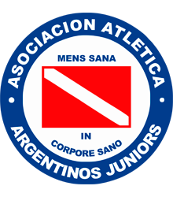

Argentinos Juniors

Nombre completo: Asociación Atlética Argentinos Juniors.
Fundación:15-08-1904 (119 años).
Apodo: Bicho Colorado.
Estadio: Diego Armando Maradona.
Nombre completo: Asociación Atlética Argentinos Juniors.
Fundación:15-08-1904 (119 años).
Apodo: Bicho Colorado.
Estadio: Diego Armando Maradona.
Nombre completo: Arsenal Fútbol Club.
Fundación: 11-01-1957 (66 años).
Apodo: Arse.
Estadio: Julio Humberto Grondona.
Nombre completo: Club Atlético Tucumán.
Fundación: 27-09-1902 (121 años).
Apodo: Decano.
Estadio: Monumental José Fierro.
Nombre completo: Club Atlético Banfield.
Fundación: 21-01-1896 (127 años).
Apodo: Taladro.
Estadio: Florencio Sola.
Nombre completo: Club Atlético Barracas Central.
Fundación: 05-04-1904 (119 años).
Apodo: Guapo, Camionero.
Estadio: Claudio Tapia.
Nombre completo: Club Atlético Belgrano.
Fundación: 19-03-1905 (118 años).
Apodo: Pirata.
Estadio: Julio César Villagra.
Nombre completo: Club Atlético Boca Juniors.
Fundación: 03-04-1905 (118 años).
Apodo: Xeneize.
Estadio: Alberto J. Armando.
Nombre completo: Club Atlético Central Córdoba.
Fundación: 03-06-1919 (104 años).
Apodo: Ferroviario.
Estadio: Alfredo Terrera.
Nombre completo: Club Atlético Colón.
Fundación: 05-05-1905 (118 años).
Apodo: Sabalero.
Estadio: Brigadier General Estanislao López.
Nombre completo: Club y Social Deportivo Defensa y Justicia.
Fundación: 20-03-1935 (88 años).
Apodo: Halcón.
Estadio: Norberto Tomaghello.
Nombre completo: Club Estudiantes La Plata.
Fundación: 04-08-1905 (118 años).
Apodo: Pincharrata, León.
Estadio: Jorge Luis Hirschi.
Nombre completo: Club Gimnasia y Esgrima La Plata.
Fundación: 03-06-1887 (136 años).
Apodo: Tripero, Lobo.
Estadio: Juan Carmelo Zerillo.
Nombre completo: Club Deportivo Godoy Cruz Antonio Tomba.
Fundación: 01-06-1921 (102 años).
Apodo: Tomba, Bodeguero.
Estadio: Malvinas Argentinas.
Nombre completo: Club Atlético Huracán.
Fundación: 01-11-1908 (114 años).
Apodo: Globo, Quemero.
Estadio: Tomás Adolfo Ducó.
Nombre completo: Club Atlético Independiente.
Fundación: 01-01-1905 (118 años).
Apodo: Diablo Rojo, Rey de Copas.
Estadio: Libertadores de América Ricardo Enrique Bochini.
Nombre completo: Instituto Atlético Central Córdoba.
Fundación: 08-08-1918 (105 años).
Apodo: La Gloria.
Estadio: Monumental de Alta Córdoba.
Nombre completo: Club Atlético Lanús.
Fundación: 03-01-1915 (108 años).
Apodo: Granate.
Estadio: Ciudad de Lanús Néstor Díaz Pérez.
Nombre completo: Club Atlético Newells Old Boys.
Fundación: 03-11-1903 (119 años).
Apodo: Leproso.
Estadio: Marcelo Bielsa.

Nombre completo: Club Atlético Platense.
Fundación: 25-05-1905 (118 años).
Apodo: Calamar.
Estadio: Ciudad de Vicente López.
Nombre completo: Racing Club.
Fundación: 25-03-1903 (120 años).
Apodo: Academia.
Estadio: Presidente Perón.
Nombre completo: Club Atlético River Plate.
Fundación: 25-05-1901 (122 años).
Apodo: Millonario.
Estadio: Estadio Mas Monumental.
Nombre completo: Club Atlético Rosario Central.
Fundación: 24-12-1889 (133 años).
Apodo: Canalla.
Estadio: Gigante de Arroyito.
Nombre completo: Club Atlético San Lorenzo de Almagro.
Fundación: 01-04-1908 (115 años).
Apodo: Ciclón, Cuervo.
Estadio: Pedro Bidegain.
Nombre completo: Club Atlético Sarmiento.
Fundación: 01-04-1911 (112 años).
Apodo: Guerrero, Verdolaga.
Estadio: Eva Perón.
Nombre completo: Club Atlético Talleres.
Fundación: 12-10-1913 (110 años).
Apodo: Matador.
Estadio: Mario Alberto Kempes.
Nombre completo: Club Atlético Tigre.
Fundación: 03-08-1902 (121 años).
Apodo: Matador, Tigre.
Estadio: José Dellagiovanna.
Nombre completo: Club Atlético Unión.
Fundación: 15-04-1907 (116 años).
Apodo: Tatengue.
Estadio: 15 de Abril.
Nombre completo: Club Atlético Vélez Sarsfield.
Fundación: 01-01-1910 (113 años).
Apodo: Fortín.
Estadio: José Amalfitani.